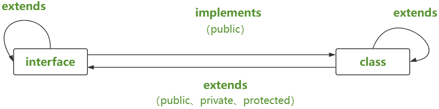

一、简介
在 ES6 中引入 class 关键字，我们终于可以向传统的面向对象语言那样去创建一个类了。总体上来讲 TS 的类覆盖了 ES6 的类，同时也引入了其他特性，接下来我们会重点比较它们两者之间的不同。
类（class）是面向对象编程的基本构件，封装了属性和方法，TypeScript 给予了全面支持。
属性的类型
类的属性可以在顶层声明，也可以在构造方法内部声明。
对于顶层声明的属性，可以在声明时同时给出类型
class Count {
a: number;
b: number;
}
- 如果开启了
strictPropertyInitialization，就会检查属性是否设置了初值，如果没有就报错
如果不给出类型，TypeScript 会认为a和b的类型都是
any
class Count {
a;
b;
}
// a 和 b 的类型都是 any
如果声明时给出初始值，可以不写类型，TypeScript 会自行推断属性的类型。
class Count {
a = 2;
b = 3;
}
// 属性 a 和 b 的类型都会被推断为 number
- 属性的类型 - 注意事项
TypeScript 有一个配置项
strictPropertyInitialization，只要打开（默认是打开的），就会检查属性是否设置了初值，如果没有就报错。
class Count {
a: number; // 报错
b: number; // 报错
}
以上代码中，如果类的顶层属性不赋值，就会报错。如果不希望出现报错，可以使用非空断言
class Count {
a!: number; // 正确
b!: number; // 正确
}
- 属性 a 和 b 没有初值，但是属性名后面添加了感叹号，表示这两个属性肯定不会为空，所以 TypeScript 就不报错了，后面 类型断言 部分还会详细讲解。
readonly 修饰符
属性名前面加上 readonly 修饰符，就表示该属性是只读的。实例对象不能修改这个属性。
class A {
readonly id = "1001";
}
const a = new A();
a.id = "1003"; // 报错
- id 属性前面有 readonly 修饰符，实例对象修改这个属性就会报错
readonly 属性的初始值，可以写在顶层属性，也可以写在构造方法里面
class A {
readonly id: string;
constructor() {
this.id = "1001"; // 正确
}
}
- 以上代码中，构造方法内部设置只读属性的初值，这是可以的。
构造方法修改只读属性的值也是可以的
class A {
readonly id: string = "1001";
constructor() {
this.id = "1003"; // 正确
}
}
- 或者说，如果两个地方都设置了只读属性的值，以构造方法为准
- 在其他方法修改只读属性都会报错
方法的类型
类的方法就是普通函数，类型声明方式与函数一致。
class Count {
a: number;
b: number;
constructor(a: number, b: number) {
this.a = a;
this.b = b;
}
add(count: Count) {
return new Count(this.a + count.a, this.b + count.b);
}
}
- 构造方法
constructor()和 普通方法add()都注明了参数类型，但是省略了返回值类型，因为 TypeScript 可以自己推断出来
类的方法跟普通函数一样，可以使用参数默认值，以及函数重载。
以下是参数默认值的例子
class Count {
a: number;
b: number;
constructor(a = 0, b = 0) {
this.a = a;
this.b = b;
}
}
- 如果新建实例时，不提供属性 a 和 b 的值，它们都等于默认值 0
以下是函数重载的例子
class Count {
constructor(a: number, b: string);
constructor(s: string);
constructor(as: number | string, b?: string) {
// ...
}
}
- 构造方法可以接受一个参数，也可以接受两个参数，采用函数重载进行类型声明
另外，构造方法不能声明返回值类型，否则报错，因为它总是返回实例对象。
class B {
constructor(): object {
// 报错
// ...
}
}
- 构造方法声明了返回值类型 object，导致报错
存取器
- 存取器方法
- 存取器（accessor）是特殊的类方法，包括取值器（getter）和 存值器（setter）两种方法。
- 它们用于读写某个属性，取值器用来读取属性，存值器用来写入属性
class C {
_username = "";
get username() {
return this._username;
}
set username(value) {
this._username = value;
}
}
get username()是取值器，其中get是关键词，username是属性名
- 外部读取
username属性时，实例对象会自动调用这个方法，该方法的返回值就是username属性的值。
set username()是存值器，其中set是关键词，username是属性名
- 外部写入username属性时，实例对象会自动调用这个方法，并将所赋的值作为函数参数传入。
- 存取器的规则
TypeScript 对存取器有以下 3 种规则
①、如果某个属性只有get方法，没有set方法，那么该属性自动成为只读属性
class C {
_username = "code";
get username() {
return this._username;
}
}
const c = new C();
c.username = "ibc"; // 报错
- username 属性没有 set 方法，对该属性赋值就会报错
②、TypeScript 5.1 版之前，set方法的参数类型，必须兼容get方法的返回值类型，否则报错
// TypeScript 5.1 版之前
class C {
_username = "";
get username(): string {
// 报错
return this._username;
}
set username(value: number) {
this._username = String(value);
}
}
- 上面示例中，get方法的返回值类型是字符串，与set方法的参数类型number不兼容，导致报错。改成下面这样，就不会报错
class C {
_name = '';
get name():string {
return this._name;
}
set name(value:number|string) {
this._name = String(value);
}
}
- 上面示例中，set 方法的参数类型（number|string）兼容 get 方法的返回值类型（string），这是允许的
- TypeScript 5.1 版做出了改变，现在两者可以不兼容。
③、get方法与set方法的可访问性必须一致，要么都为公开方法，要么都为私有方法。
属性索引
类允许定义属性索引
class Test {
[s: string]: boolean | ((s: string) => boolean);
get(s: string) {
return this[s] as boolean;
}
}
[s:string]表示所有属性名类型为字符串的属性，它们的属性值要么是布尔值，要么是返回布尔值的函数
注意，由于类的方法是一种特殊属性（属性值为函数的属性），所以属性索引的类型定义也涵盖了方法。如果一个对象同时定义了属性索引和方法，那么前者必须包含后者的类型
class Test {
[s: string]: boolean;
f() {
// 报错
return true;
}
}
以上代码中，属性索引的类型里面不包括方法，导致后面的方法f()定义直接报错。正确的写法是下面这样
class Test {
[s: string]: boolean | (() => boolean);
f() {
return true;
}
}
属性存取器视同属性。
class Test {
[s: string]: boolean;
get isInstance() {
return true;
}
}
- 属性 inInstance 的读取器虽然是一个函数方法，但是视同属性，所以属性索引虽然没有涉及方法类型，但是不会报错
ES6 与 TS 中的 class
TS 中类的基本实现
// 定义一个 People 类，与 ES 不同的是，我们为成员属性添加了类型注解
class People {
// 构造函数的参数添加了类型注解
// 构造函数的返回值会自动推断为 People，即该类的本身（鼠标划上去即可看到）
constructor(username: string) {
this.username = username;
}
username: string;
// run() 方法的默认返回值是 void（鼠标划上去即可看到）
run() {}
}
无论在 ES 或 TS 中，类成员的属性都是实例属性，而不是原型属性；而类成员的方法都是实例方法；
- 打印 People 类的原型，对比看结果
class People {
constructor(username: string) {
this.username = username;
}
username: string;
run() {}
}
// 打印输出 类的原型
console.log(People.prototype); // {constructor: ƒ, run: ƒ}
- 从上边打印的结果可以看到，它是不包含 username 属性的，只有
constructor和run方法
- 创建一个类的实例，并打印输出类的实例
class People {
constructor(username: string) {
this.username = username;
}
username: string;
run() {}
}
// 打印输出 类的原型
console.log(People.prototype); // {constructor: ƒ, run: ƒ}
// 创建一个类的实例
let people = new People("hermia");
console.log(people); // People { username: 'hermia' }
- 通过以上打印输出类实例的结果，对比可以看到
- username 属性只在实例上而不在原型上；
- 与 ES 中不同的是，TS中实例的属性必须具有初始值 或 在构造函数中被初始化。即
this.username = username（如果删掉该初始化的语句，那么编译器就会提示我们必须要赋一个初始的值）。如下
class People {
constructor(username: string) {
// this.username = username
// 删掉该初始化的语句，编辑器就会报错提示：必须要赋一个初始的值
}
// 赋一个初始的值
// username: string = 'arry'
// 或 将 username 设置为可选属性，也会不报错
username?: string;
run() {}
}
// 打印输出 类的原型
console.log(People.prototype); // {constructor: ƒ, run: ƒ}
// 创建一个类的实例
let people = new People("hermia");
console.log(people); // People { username: 'hermia' }
二、类的 interface 接口
接口在 TS 中是一个非常重要的概念，接口可以用来约束对象、函数、以及类的结构 和 类型，这是一种代码协作的契约，我们必须遵守而且不能改变。
implements 关键字
interface接口或type别名，可以用对象的形式，为 class 指定一组检查条件然后，类使用
implements关键字，表示当前类满足这些外部类型条件的限制
interface User {
username: string;
desc: string;
}
// 或者
type User = {
username: string;
desc: string;
};
class Allen implements User {
username = "";
desc = "";
}
interface或type都可以定义一个对象类型- 类
Allen使用implements关键字，表示该类的实例对象满足这个外部类型
interface 只是指定检查条件，如果不满足这些条件就会报错。它并不能代替 class 自身的类型声明。
interface A {
get(username: string): boolean;
}
class B implements A {
// s 的类型是 any
get(s) {
return true;
}
}
- 以上代码中，类B实现了接口A，但是后者并不能代替B的类型声明。
- 因此，B的
get()方法的参数s的类型是any，而不是string。B类依然需要声明参数s的类型
class B implements A {
get(s: string) {
return true;
}
}
- implements 实践
interface User {
username: string;
age?: number;
}
class Allen implements User {
username = "code";
}
const a = new Allen();
a.age = 18; // 报错
- 以上代码中，接口
User有一个可选属性age，类Allen没有声明这个属性，所以可以通过类型检查
但是，如果给
Allen的实例对象的属性age赋值，就会报错。所以，Allen类还是需要声明可选属性age。如下
interface User {
username: string;
age?: number;
}
class Allen implements User {
username = "code";
// 声明可选属性 age
age?: number;
}
const a = new Allen();
a.age = 18;
- implements 注意事项
类可以定义接口没有声明的方法和属性。
interface Count {
x: number;
y: number;
}
class Nums implements Count {
x = 1;
y = 2;
// 定义一个接口没有的属性
z: number = 3;
}
Nums类实现了Count接口，但是内部还定义了一个额外的属性z，这是允许的，表示除了满足接口给出的条件，类还有额外的条件
implements关键字后面，不仅可以是接口，也可以是另一个类。这时，后面的类将被当作接口。
class Person {
id: number = 1;
run(): void {}
}
class Allen implements Person {
id = 2; // 不可省略
run(): void {} // 不可省略
}
- implements 后面是类 Person，这时 TypeScript 就把 Person 视为一个接口，要求 Allen 实现 Person 里面的每一个属性和方法，否则就会报错
- 所以，这时不能因为 Person 类已经实现过一次，而在 Allen 类省略属性或方法。
interface描述的是类的对外接口，也就是实例的公开属性和公开方法，不能定义私有的属性和方法。
- 这是因为 TypeScript 设计者认为，私有属性是类的内部实现，接口作为模板，不应该涉及类的内部代码写法。
interface Foo {
member: {}; // 报错
}
- 接口 Foo 有一个私有属性，结果就报错了
实现多个接口
类可以实现多个接口（其实是接受多重限制），每个接口之间使用逗号分隔。
class User implements Student, Engineer, Doctor {
// ...
}
- User 类同时实现了Student、Engineer、 Doctor三个接口
- 这意味着，它必须部署这三个接口声明的所有属性和方法，满足它们的所有条件
但是，同时实现多个接口并不是一个好的写法，容易使得代码难以管理，可以使用两种方法替代。
- 方式一：类的继承
class User implements Student {}
class CollegeStudent extends User implements Engineer, Doctor {}
- User 类实现了 Student，而 CollegeStudent 类继承了 User 类，然后再实现Engineer 和 Doctor 两个接口，相当于 CollegeStudent 类同时实现了三个接口。
- 方式二：接口的继承
interface User {
username: string;
}
interface Student extends User {
age: number;
}
- 接口 Student 继承了接口 User，类只要实现接口 Student，就相当于实现 User 和 Student 两个接口
- 接口继承改写
interface Student {
// ...
}
interface Engineer {
// ...
}
interface Doctor {
// ...
}
interface SuperUser extends Student, Engineer, Doctor {
// ...
}
class AdministratorUser implements SuperUser {
// ...
}
- 类 AdministratorUser 通过 SuperUser 接口，就间接实现了多个接口
- 注意事项
发生多重实现时（即一个接口同时实现多个接口），不同接口不能有互相冲突的属性
interface Engineer {
foo: number;
}
interface Doctor {
foo: string;
}
- 属性 foo 在两个接口里面的类型不同，如果同时实现这两个接口，就会报错。
类与接口的合并
TypeScript 不允许两个同名的类，但是如果一个类和一个接口同名，那么接口会被合并进类。
class A {
x: number = 1;
}
interface A {
y: number;
}
let a = new A();
a.y = 10;
a.x; // 1
a.y; // 10
- 类 A 与 接口 A 同名，后者会被合并进前者的类型定义
接口中被合并进类的非空属性（上例的y），如果在赋值之前读取，会返回
undefined
class A {
x: number = 1;
}
interface A {
y: number;
}
let a = new A();
a.y; // undefined
- 根据类型定义，y 应该是一个非空属性
- 但是合并后，y 有可能是
undefined
三、类 与 接口的关系
类类型接口
类类型接口：一个接口可以约束类成员有哪些属性 以及 它们的类型
// 定义一个 People 接口
interface People {
// username 属性
username: string;
// eat 方法
eat(): void;
}
// 用 Kevin 实现了 People 接口（使用 implements 关键字）
class Kevin implements People {
constructor(username: string) {
this.username = username;
}
username: string;
eat() {}
// 类也可以定义自己的属性
sleep() {}
}
- 类实现接口时必须实现接口中声明的所有属性，否则会报错
注
- ①、接口只能约束类的公有成员
- ②、接口不能约束类的构造函数
interface People {
// 接口不能约束类的构造函数
// new (username: string): void
username: string;
eat(): void;
}
class Kevin implements People {
constructor(username: string) {
this.username = username;
}
// 接口只能约束类的公有成员
private username: string;
eat() {}
}
接口的继承
接口可以像类一样，相互继承。并且一个接口可以继承多个接口
interface People {
username: string;
eat(): void;
}
// 定义 Man 接口来继承 People 接口
interface Man extends People {
// 给 Man 接口添加 run 方法
run(): void;
}
// 定义 Child 接口
interface Child {
// 给 Child 接口添加 cry 方法（哭）
cry(): void;
}
// 定义 Boy 接口，让其同时继承 Man 和 Child 接口
interface Boy extends Man, Child {}
// 定义一个对象，要符合 Boy 接口的定义
// 该对象中会有四个属性，分别来自 Man、People、Child 接口中
let boy: Boy = {
username: "",
run() {},
eat() {},
cry() {},
};
- 从接口的继承可以看出，接口的继承可以抽离出可重用的接口，也可以将多个接口合并成一个接口。
接口继承类
接口除了可以继承接口外，还可以继承类。
- 这就相当于接口把类的成员都抽离了出来，也就是只有类的成员结构而没有具体的实现。
// 定义一个 Auto 类
class Auto {
// 公共属性 state
state = 1;
// 私有成员
// private state1 = 3
}
// 定义 AutoInterface 接口来继承 Auto 类，现在该接口中就隐含了 state 属性
// 想要实现 AutoInterface 接口，只要一个类的成员有 state 属性即可
interface AutoInterface extends Auto {}
// Car 类实现 AutoInterface 接口，只需要添加 state 属性即可
class Car implements AutoInterface {
state = 2;
}
// Auto 的子类也可以实现 AutoInterface 这个接口
class Bus extends Auto implements AutoInterface {}
- 在 Bus 子类中就不必实现 state 属性了，因为它是 Auto 的子类，自然就继承了 state 属性
- 在 Auto 类中定义一个私有成员，
"private state1 = 3"，此时 Car 即会报错，该类错误的实现了AutoInterface接口 - 注：接口在抽离类的成员时，不仅抽离了公共成员，而且抽离了私有成员和受保护成员(因此
AutoInterface拥有Auto 类的所有成员) - 而Car类实现
AutoInterface接口，必须实现接口中声明的所有属性；因为 Car 不是 Auto的子类，自然不能包含它的非公有成员，所以会报错
接口 和 类的关系
关于接口和类的关系比较容易混淆，如下图所示，更能清晰的理解

- ①、接口之间是可以相互继承的，这样可以实现接口的复用
- ②、类之间也可以互相继承，可以实现方法 和 属性的复用
- ③、接口是可以通过类来实现的，但接口只能约束类的公有成员
- ④、接口也可以抽离出类的成员，抽离时会包括类的公有成员、私有成员 和 受保护成员
四、Class 类型
实例类型
TypeScript 的类本身就是一种类型，但是它代表该类的实例类型，而不是 class 的自身类型。
class User {
username: string;
constructor(username: string) {
this.username = username;
}
}
const allen: User = new User("allen");
- 定义了一个类 User。它的类名就代表一种类型，实例对象 allen 就属于该类型
对于引用实例对象的变量来说，既可以声明类型为
Class，也可以声明类型为Interface，因为两者都代表实例对象的类型。
interface MotorVehicle {
}
class Car implements MotorVehicle {
}
// 写法一
const c1:Car = new Car();
// 写法二
const c2:MotorVehicle = new Car();
- 变量的类型可以写成类Car，也可以写成接口MotorVehicle
- 它们的区别是，如果类Car有接口MotoVehicle没有的属性和方法，那么只有变量c1可以调用这些属性和方法
作为类型使用时，类名只能表示实例的类型，不能表示类的自身类型
class Point {
x:number;
y:number;
constructor(x:number, y:number) {
this.x = x;
this.y = y;
}
}
// 错误
function createPoint(
PointClass:Point,
x: number,
y: number
) {
return new PointClass(x, y);
}
- 函数createPoint()的第一个参数PointClass，需要传入 Point 这个类，但是如果把参数的类型写成Point就会报错，因为Point描述的是实例类型，而不是 Class 的自身类型
由于类名作为类型使用，实际上代表一个对象，因此可以把类看作为对象类型起名
- 事实上，TypeScript 有三种方法可以为对象类型起名：
type、interface和class
类的自身类型
要获得一个类的自身类型，一个简便的方法就是使用 typeof 运算符
class Count {
x: number;
y: number;
constructor(x: number, y: number) {
this.x = x;
this.y = y;
}
}
function createCount(
CountClass: typeof Count,
x: number,
y: number
): Count {
return new CountClass(x, y);
}
createCount()的第一个参数CountClass是Count类自身，要声明这个参数的类型，简便的方法就是使用typeof Count- 因为 Count 类是一个值，typeof Count 返回这个值的类型
- 注意，createCount() 的返回值类型是 Count，代表实例类型
JavaScript 语言中，类只是构造函数的一种语法糖，本质上是构造函数的另一种写法。所以，类的自身类型可以写成构造函数的形式。
class Count {
x: number;
y: number;
constructor(x: number, y: number) {
this.x = x;
this.y = y;
}
}
function createCount(
CountClass: new (x: number, y: number) => Count,
x: number,
y: number
): Count {
return new CountClass(x, y);
}
// 参数 CountClass 的类型写成了一个构造函数，这时就可以把 Count 类传入
构造函数也可以写成对象形式，所以参数CountClass的类型还有另一种写法。
class Count {
x: number;
y: number;
constructor(x: number, y: number) {
this.x = x;
this.y = y;
}
}
function createCount(
CountClass: {
new (x: number, y: number): Count;
},
x: number,
y: number
): Count {
return new CountClass(x, y);
}
根据上面的写法，可以把构造函数提取出来，单独定义一个接口（interface），这样可以大大提高代码的通用性。
interface CountConstructor {
new (x: number, y: number): Count;
}
function createCount(
CountClass: CountConstructor,
x: number,
y: number
): Count {
return new CountClass(x, y);
}
- 类的自身类型就是一个构造函数，可以单独定义一个接口来表示。
结构类型原则
Class 也遵循“结构类型原则”。一个对象只要满足 Class 的实例结构，就跟该 Class 属于同一个类型。
class Foo {
id!: number;
}
function fn(arg: Foo) {
// ...
}
const bar = {
id: 10,
amount: 100,
};
fn(bar); // 正确
- 对象 bar 满足类 Foo 的实例结构，只是多了一个属性 amount
- 所以，它可以当作参数，传入函数
fn()
如果两个类的实例结构相同，那么这两个类就是兼容的，可以用在对方的使用场合。
class Person {
username: string;
}
class Customer {
username: string;
}
// 正确
const cust: Customer = new Person();
- Person 和 Customer是两个结构相同的类，TypeScript 将它们视为相同类型，因此 Person 可以用在类型为 Customer 的场合
现在修改一下代码，Person类添加一个属性。
class Person {
username: string;
age: number;
}
class Customer {
username: string;
}
// 正确
const cust: Customer = new Person();
- Person 类添加了一个属性 age，跟 Customer 类的结构不再相同
- 但是这种情况下，TypeScript 依然认为，Person 属于 Customer 类型
这是因为根据“结构类型原则”，只要
Person类具有username属性，就满足Customer类型的实例结构，所以可以代替它。
- 反过来就不行，如果
Customer类多出一个属性，就会报错。
class Person {
username: string;
}
class Customer {
username: string;
age: number;
}
// 正确
const cust: Customer = new Person();
- Person 类 比 Customer 类 少一个属性 age，它就不满足 Customer 类型的实例结构，就报错了
- 因为在使用 Customer 类型的情况下，可能会用到它的 age 属性，而 Person 类就没有这个属性
总之，只要 A 类具有 B 类的结构，哪怕B 类还有额外的属性和方法，TypeScript 也认为 A 兼容 B 的类型。
不仅是类，如果某个对象跟某个 class 的实例结构相同，TypeScript 也认为两者的类型相同。
class Person {
username: string;
}
const obj = { username: "Allen" };
const p: Person = obj; // 正确
- 对象 obj 并不是 Person 的实例，但是赋值给变量 p 不会报错，TypeScript 认为 obj 也属于 Person 类型，因为它们的属性相同
由于这种情况，运算符
instanceof不适用于判断某个对象是否跟某个 class 属于同一类型。
obj instanceof Person; // false
- 运算符 instanceof 确认变量 obj 不是 Person 的实例，但是两者的类型是相同的
空类不包含任何成员，任何其他类都可以看作与空类结构相同。因此，凡是类型为空类的地方，所有类（包括对象）都可以使用。
class Empty {}
function fn(x: Empty) {
// ...
}
fn({});
fn(window);
fn(fn);
// 函数 fn() 的参数是一个空类，这意味着任何对象都可以用作 fn() 的参数
- 结构类型原则 - 注意事项
注意，确定两个类的兼容关系时，只检查实例成员，不考虑静态成员和构造方法。
class Count {
x: number;
y: number;
static t: number;
constructor(x: number) {}
}
class Position {
x: number;
y: number;
z: number;
constructor(x: string) {}
}
const count: Count = new Position("");
- Count 与 Position 的静态属性和构造方法都不一样，但因为 Count 的实例成员 与 Position 相同，所以 Position 兼容 Count
如果类中存在私有成员（private）或保护成员（protected），那么确定兼容关系时，TypeScript 要求私有成员和保护成员来自同一个类，这意味着两个类需要存在继承关系。
// 情况一
class A {
private username = "a";
}
class B extends A {}
const a: A = new B();
// 情况二
class A {
protected username = "a";
}
class B extends A {
protected username = "b";
}
const a: A = new B();
- A 和 B 都有私有成员（或保护成员）username，这时只有在 B 继承 A 的情况下（class B extends A），B 才兼容 A
类的继承
类（这里又称“子类”）可以使用
extends关键字继承另一个类（这里又称“基类”）的所有属性和方法。
class A {
greet() {
console.log("Hello, world!");
}
}
class B extends A {}
const b = new B();
b.greet(); // "Hello, world!"
- 子类 B 继承了基类 A，因此就拥有了
greet()方法，不需要再次在类的内部定义这个方法了
根据结构类型原则，子类也可以用于类型为基类的场合。
const a: A = b;
a.greet();
- 变量 a 的类型是基类，但是可以赋值为子类的实例
子类可以覆盖基类的同名方法
class A {
greet() {
console.log("Hello, world!");
}
}
class B extends A {
greet(username?: string) {
if (username === undefined) {
super.greet();
} else {
console.log(`Hello, ${username}`);
}
}
}
- 子类 B 定义了一个方法 greet()，覆盖了基类 A 的同名方法
- 其中，参数 username 省略时，就调用基类 A 的 greet() 方法，这里可以写成
super.greet()，使用 super 关键字指代基类是常见做法
但是，子类的同名方法不能与基类的类型定义相冲突。
class A {
greet() {
console.log("Hello, world!");
}
}
class B extends A {
// 报错
greet(username: string) {
console.log(`Hello, ${username}`);
}
}
- 子类 B 的 greet() 有一个 username 参数，跟基类 A 的 greet() 定义不兼容，因此就报错了
如果基类包括保护成员（protected修饰符）
- 子类可以将该成员的可访问性设置为公开（public修饰符）
- 也可以保持保护成员不变
- 但是不能改为私有成员（private修饰符）
class A {
protected x: string = "";
protected y: string = "";
protected z: string = "";
}
class B extends A {
// 正确
public x: string = "";
// 正确
protected y: string = "";
// 报错
private z: string = "";
}
- 子类 B 将基类 A 的受保护成员改成私有成员，就会报错
注意，extends关键字后面不一定是类名，可以是一个表达式，只要它的类型是构造函数就可以了。
// 例一
class MyArray extends Array<number> {}
// 例二
class MyError extends Error {}
// 例三
class A {
running() {
return "I'm A, I like running";
}
}
class B {
running() {
return "I'm B, I like running";
}
}
interface Admin {
running(): string;
}
interface AdminConstructor {
new (): Admin;
}
function getAdminBase(): AdminConstructor {
return Math.random() >= 0.5 ? A : B;
}
class Test extends getAdminBase() {
sayHello() {
console.log(this.running());
}
}
- 例一 和 例二的 extends 关键字后面都是构造函数
- 例三的 extends 关键字后面是一个表达式，执行后得到的也是一个构造函数
对于那些只设置了类型、没有初值的顶层属性，有一个细节需要注意。
interface Animal {
animalStuff: any;
}
interface Dog extends Animal {
dogStuff: any;
}
class AnimalHouse {
resident: Animal;
constructor(animal:Animal) {
this.resident = animal;
}
}
class DogHouse extends AnimalHouse {
resident: Dog; //报错
constructor(dog:Dog) {
super(dog);
}
}
- 类
DogHouse的顶层成员resident只设置了类型Dog，没有设置初值 - 这段代码在不同的编译设置下，编译结果不一样
如果编译设置
的target设成大于等于ES2022，或者useDefineForClassFields设成true，那么下面代码的执行结果是不一样的。
// 实例化运行
const dog = {
animalStuff: 'animal',
dogStuff: 'dog'
};
const dogHouse = new DogHouse(dog);
console.log(dogHouse.resident)
编译后运行 JS 文件
- 如果 target 大于等于 ES2022 ，输出
undefined - 如果 target 小于 ES2022 ，输出
{ animalStuff: 'animal', dogStuff: 'dog' } - 以上代码中，
DogHouse实例的属性resident输出的是undefined，而不是预料的dog。 - 原因在于 ES2022 标准的 Class Fields 部分，与早期的 TypeScript 实现不一致，导致子类的那些只设置类型、没有设置初值的顶层成员在基类中被赋值后，会在子类被重置为
undefined，详细的解释参见后边tsconfig.json一节，以及官方 3.7 版本的发布说明
解决方法就是使用
declare命令，去声明顶层成员的类型，告诉 TypeScript 这些成员的赋值由基类实现。
class DogHouse extends AnimalHouse {
// 使用前 报错
resident: Dog;
// 使用 declare 命令后，不报错
declare resident: Dog;
constructor(dog:Dog) {
super(dog);
}
}
- resident 属性的类型声明前面用了 declare 命令，这样就能确保在编译目标大于等于 ES2022 时（或者打开
useDefineForClassFields时），代码行为正确
可访问性修饰符
类的内部成员的外部可访问性，由三个可访问性修饰符（access modifiers）控制：
- public 公有成员
- private 私有成员
- protected 受保护成员
- 这三个修饰符的位置，都写在属性或方法的最前面。
- public
public修饰符表示这是公开成员，外部可以自由访问。
- 类的所有属性默认都是 public，即： 对所有人都是可见的，同时也可以显示的声明
class User {
public runing() {
console.log("I like running");
}
}
const u = new User();
u.runing(); // I like running
// runing() 方法前面的 public 修饰符，表示该方法可以在类的外部调用，即外部实例可以调用
- public修饰符是默认修饰符，如果省略不写，实际上就带有该修饰符。因此，类的属性和方法默认都是外部可访问的。
- 正常情况下，除非为了醒目和代码可读性，public都是省略不写的。
- private
private修饰符表示私有成员，只能用在当前类的内部，类的实例和子类都不能使用该成员
class User {
private username: string = "icoding";
}
const u = new User();
u.username; // 报错
class Allen extends User {
showUserName() {
console.log(this.username); // 报错
}
}
- 属性 username 前面有 private 修饰符，表示这是私有成员
- 因此，实例对象和子类使用该成员，都会报错
注意，子类不能定义父类私有成员的同名成员。
class User {
private age = 0;
}
class Allen extends User {
age = 18; // 报错
}
- User 类有一个私有属性 age，子类 Allen 就不能定义自己的属性 age 了
如果在类的内部，当前类的实例可以获取私有成员。
class User {
private age = 18;
foo(obj: User) {
console.log(obj.age);
}
}
const u = new User();
u.foo(u); // 18
- 在类 User 内部， User 的实例对象可以获取私有成员 age
严格地说，private定义的私有成员，并不是真正意义的私有成员。
- 一方面，编译成 JavaScript 后，private关键字就被剥离了，这时外部访问该成员就不会报错
- 另一方面，由于前一个原因，TypeScript 对于访问private成员没有严格禁止，使用方括号写法（
[]）或者in运算符，实例对象就能访问该成员。
class User {
private age = 18;
}
const u = new User();
u["age"]; // 18
if ("age" in u) {
// 正确
// ...
}
- User 类的属性 age 是私有属性，但是实例使用方括号，就可以读取这个属性，或者使用 in 运算符检查这个属性是否存在，都可以正确执行。
由于private存在这些问题，加上它是 ES2022 标准发布前出台的，而 ES2022 引入了自己的私有成员写法
#propName。因此建议不使用private，改用 ES2022 的写法，获得真正意义的私有成员
class User {
#age = 18;
}
const u = new User();
u["age"]; // 报错
- 采用了 ES2022 的私有成员写法（属性名前加 #），TypeScript 就正确识别了实例对象没有属性 age，从而报错
构造方法也可以是私有的，这就直接防止了使用
new命令生成实例对象，只能在类的内部创建实例对象。
- 这时一般会有一个静态方法，充当工厂函数，强制所有实例都通过该方法生成。
class Singleton {
private static instance?: Singleton;
private constructor() {}
static getInstance() {
if (!Singleton.instance) {
Singleton.instance = new Singleton();
}
return Singleton.instance;
}
}
const s = Singleton.getInstance();
- 以上使用私有构造方法，实现了单例模式
- 想要获得
Singleton的实例，不能使用new命令，只能使用getInstance()方法
- protected
protected修饰符表示该成员是受保护成员，只能在类的内部使用该成员，实例无法使用该成员，但是子类内部可以使用。
class User {
protected age = 18;
}
class Allen extends User {
getAge() {
return this.age;
}
}
const u = new User();
const a = new Allen();
u.age; // 报错
const s = a.getAge(); // 18
- 类 User 的属性 age 是保护成员，直接从实例读取该属性（u.age）会报错，但是子类B内部可以读取该属性。
子类不仅可以拿到父类的保护成员，还可以定义同名成员
class User {
protected age = 18;
}
class Allen extends User {
age = 20;
}
- 子类 Allen 定义了父类 User 的同名成员 age ，并且父类的 age 是保护成员，子类将其改成了公开成员。
- Allen 类的 age 属性前面没有修饰符，等同于修饰符是 public，外界可以读取这个属性。
在类的外部，实例对象不能读取保护成员，但是在类的内部可以。
class User {
protected age = 18;
foo(obj: User) {
console.log(obj.age);
}
}
const u = new User();
u.age; // 报错
u.foo(u); // 1
// 属性 age 是类 User 的保护成员，在类的外部，实例对象 u 拿不到这个属性
// 但是，实例对象 u 传入类 User 的内部，就可以从 u 拿到 age
- 完整的实践案例
一个受保护成员只能在类 或 子类中访问，而不能在类的实例中访问
class People {
constructor(username: string) {
this.username = username;
}
public username: string;
run() {}
private eat() {}
// 受保护成员
protected pro() {}
}
let people = new People("艾编程");
// 受保护成员不能在类的实例中访问，会报错
people.pro();
class Allen extends People {
constructor(username: string, age: number) {
super(username);
this.age = age;
// 在子类中调用父类中受保护的成员，允许访问
this.pro();
}
age: number;
}
构造函数也能被声明为 protected
- 作用：使当前类不能被实例化，只能被继承。就相当于声明了一个基类
class People {
// 构造函数也能被声明为 protected
// 作用：当前类不能被实例化，只能被继承。就相当于声明了一个基类
protected constructor(username: string) {
this.username = username;
}
public username: string;
run() {}
private eat() {}
// 受保护成员
protected pro() {}
}
// 报错
let people = new People("abc");
// 受保护成员不能在类的实例中访问，会报错
people.pro();
实例属性的简写形式
实际开发中，很多实例属性的值，是通过构造方法传入的。
class Count {
a: number;
b: number;
constructor(a: number, b: number) {
this.a = a;
this.b = b;
}
}
// 属性 a 和 b 的值是通过构造方法的参数传入的
- 这样的写法等于对同一个属性要声明两次类型，一次在类的头部，另一次在构造方法的参数里面。这有些累赘，TypeScript 就提供了一种简写形式。
class Count {
constructor(public a: number, public b: number) {}
}
const c = new Count(11, 22);
c.a; // 11
c.b; // 22
- 构造方法的参数
a前面有public修饰符，这时 TypeScript 就会自动声明一个公开属性a，不必在构造方法里面写任何代码，同时还会设置a的值为构造方法的参数值。 - 注意，这里的
public不能省略
除了public修饰符，构造方法的参数名只要有private、protected、readonly修饰符，都会自动声明对应修饰符的实例属性
class U {
constructor(
public a: number,
protected b: number,
private c: number,
readonly d: number
) {}
}
// 编译结果
class U {
constructor(a, b, c, d) {
this.a = a;
this.b = b;
this.c = c;
this.d = d;
}
}
- 从编译结果可以看到，构造方法的 a、b、c、d 会生成对应的实例属性
readonly还可以与其他三个可访问性修饰符，一起使用。
class U {
constructor(
public readonly a: number,
protected readonly b: number,
private readonly c: number
) {}
}
readonly 只读属性
类的成员也可以被声明为 readonly 只读属性，只读属性不能被更改，只读属性一定要被初始化。
class People {
constructor(username: string) {
this.username = username;
}
public username: string;
run() {}
private eat() {}
protected pro() {}
// 只读属性，只读属性不能被更改，只读属性一定要被初始化
readonly legs: number = 2;
}
静态成员
类的内部可以使用
static关键字，定义静态成员。
- 静态成员是只能通过类本身使用的成员，不能通过实例对象使用
class User {
static age = 18;
static printAge() {
console.log(User.age);
}
}
User.age; // 18
User.printAge(); // 18
- age 是静态属性，printAge() 是静态方法
- 它们都必须通过 User 获取，而不能通过实例对象调用
static关键字前面可以使用public、private、protected修饰符
class User {
private static age = 18;
}
User.age; // 报错
- 静态属性 age 前面有 private 修饰符，表示只能在 User 内部使用，如果在外部调用这个属性就会报错
静态私有属性也可以用 ES6 语法的
#前缀表示，上面示例可以改写如下
class User {
static #age = 18;
}
public和protected的静态成员可以被继承。
class User {
public static x = 1;
protected static y = 2;
}
class Allen extends User {
static getY() {
return Allen.y;
}
}
Allen.x; // 1
Allen.getY(); // 2
- 类 User 的静态属性 x 和 y 都被 Allen 继承，公开成员 x 可以在 Allen 的外部获取，保护成员 y 只能在 Allen 的内部获取
泛型类
类也可以写成泛型，使用类型参数。关于泛型的详细介绍，会在泛型部分讲解
class Message<Type> {
contents: Type;
constructor(value: Type) {
this.contents = value;
}
}
const b: Message<string> = new Message("hi icoding !");
- 类 Message 有类型参数 Type，因此属于泛型类
- 新建实例时，变量的类型声明需要带有类型参数的值，不过本例等号左边的
Message<string>可以省略不写，因为可以从等号右边推断得到。
注意，静态成员不能使用泛型的类型参数。
class Message<Type> {
static defaultContents: Type; // 报错
}
- 以上代码中，静态属性
defaultContents的类型写成类型参数Type会报错。 - 因为这意味着调用时必须给出类型参数（即写成
Message<string>.defaultContents），并且类型参数发生变化，这个属性也会跟着变，这并不是好的做法。
抽象类，抽象成员
在 ES 中并没有引入抽象类的概念，这是 TS 对 ES 的又一次扩展。
- TypeScript 允许在类的定义前面，加上关键字
abstract，表示该类不能被实例化，只能当作其他类的模板。即：只能被继承而不能被实例化的类- 这种类就叫做 “抽象类”（abstract class）
abstract class User {
id = 1001;
}
const u = new User(); // 报错
// 直接新建抽象类的实例，会报错
抽象类只能当作基类使用，用来在它的基础上定义子类。即：抽象类只能被继承
abstract class User {
id = 1001;
}
class Allen extends User {
amount = 123;
}
const a = new Allen();
a.id; // 1001
a.amount; // 123
- User 是一个抽象类，Allen 是 User 的子类，继承了 User 的所有成员，并且可以定义自己的成员和实例化
抽象类的子类也可以是抽象类，也就是说，抽象类可以继承其他抽象类。
abstract class User {
foo: number = 1;
}
abstract class Allen extends User {
bar: string = "icoding";
}
抽象类的内部可以有已经实现好的属性和方法，也可以有还未实现的属性和方法。
- 后者就叫做“抽象成员”（abstract member），即属性名和方法名有abstract关键字，表示该方法需要子类实现。如果子类没有实现抽象成员，就会报错。
abstract class User {
abstract foo: string;
bar: string = "";
}
class Allen extends User {
foo = "allen";
}
- 抽象类 User 定义了抽象属性 foo，子类 Allen 必须实现这个属性，否则会报错
下面是抽象方法的例子。如果抽象类的方法前面加上
abstract，就表明子类必须给出该方法的实现。
abstract class User {
abstract execute(): string;
}
class Allen extends User {
execute() {
return `执行了 Allen`;
}
}
- 抽象类 - 实践应用
只能被继承而不能被实例化的类
abstract class Animal {
// 在抽象类中定义一个方法，它可以有具体的实现，这样子类就不用实现了（实现方法的复用）
eat() {
console.log("eat ......");
}
}
// 无法创建抽象类的实例
// let animal = new Animal()
// Dog 继承 Animal
class Dog extends Animal {
constructor(name: string) {
// 派生类的构造函数必须包含 "super" 调用
super();
this.name = name;
}
name: string;
run() {}
}
let dog = new Dog("旺旺旺");
// 在子类中调用 eat() 方法，可以正常调用
dog.eat(); // eat ......
- 抽象方法的好处
在抽象类中也可以不指定方法的具体实现，即构成一个抽象方法
- 抽象方法的好处是：明确知道子类有其他的实现，就没必要在父类中实现了。
abstract class Animal {
eat() {
console.log("eat ......");
}
// 定义抽象方法：在抽象类中也可以不指定方法的具体实现
abstract sleep(): void;
}
class Dog extends Animal {
constructor(name: string) {
super();
this.name = name;
}
name: string;
run() {}
// 在子类中实现父类的抽象方法 sleep()
sleep() {
console.log("I want to sleep ...");
}
}
总结：
- 抽象类的好处：可以抽离出一些事物的共性，这样就更有利于代码的复用和扩展。
- 同时，抽象类也可以实现多态。
- 抽象类、抽象成员 - 注意事项
- ①、抽象成员只能存在于抽象类，不能存在于普通类。
- ②、抽象成员不能有具体实现的代码。也就是说，已经实现好的成员前面不能加
abstract关键字。 - ③、抽象成员前也不能有
private修饰符，否则无法在子类中实现该成员 - ④、一个子类最多只能继承一个抽象类。
总之，抽象类的作用是，确保各种相关的子类都拥有跟基类相同的接口，可以看作是模板。其中的抽象成员都是必须由子类实现的成员，非抽象成员则表示基类已经实现的、由所有子类共享的成员。
多态
在父类中，定义一个抽象方法，在多个子类中对该方法有不同的实现，在程序运行时会根据不同的对象执行不同的操作。即可实现运行时的绑定 ！
- 实现 TS 中的多态
abstract class Animal {
eat() {
console.log("eat ......");
}
// 定义抽象方法：在抽象类中也可以不指定方法的具体实现
abstract sleep(): void;
}
class Dog extends Animal {
constructor(name: string) {
super();
this.name = name;
}
name: string;
run() {}
// 在子类中实现父类的抽象方法 sleep()
sleep() {
console.log("Dog：I want to sleep ...");
}
}
// 创建 Dog 的实例
let dog = new Dog("旺旺旺");
dog.eat(); // eat ......
// 实现 TS 中的多态
class Cat extends Animal {
// 实现父类的抽象方法 sleep
sleep() {
console.log("Cat：I want to sleep ...");
}
}
// 创建 Cat 类的实例
let cat = new Cat();
// 定义一个 Animal 数组
let animals: Animal[] = [dog, cat];
// 执行 animals 的 forEach 循环
animals.forEach((i) => {
// 在程序执行时，此时就会判断具体的实例是哪一种实例
// 然后执行不同的方法，这样就实现了多态
i.sleep();
});
this 问题
类的方法经常用到this关键字，它表示该方法当前所在的对象。
class User {
username = "User";
getUserName() {
return this.username;
}
}
const a = new User();
a.getUserName(); // 'User'
const b = {
username: "b",
getUserName: a.getUserName,
};
b.getUserName(); // 'b'
- 变量 a 和 b 的
getUserName()是同一个方法，但是执行结果不一样，原因就是它们内部的 this 指向不一样的对象。 - 如果
getUserName()在变量 a 上运行，this 指向 a - 如果在 b 上运行，this 指向 b
有些场合需要给出
this类型，但是 JavaScript 函数通常不带有this参数，这时 TypeScript 允许函数增加一个名为this的参数，放在参数列表的第一位，用来描述函数内部的this关键字的类型。
// 编译前
function fn(this: SomeType, x: number) {
//
}
// 编译后
function fn(x) {
//
}
- 函数 fn() 的第一个参数是 this，用来声明函数内部的 this 的类型
- 编译时，TypeScript 一旦发现函数的第一个参数名为 this，则会去除这个参数，即编译结果不会带有该参数
将 this 作为类方法的参数，调用方法时 this 的类型就会跟声明的类型不一致
class User {
username = "icoding";
getUserName(this: User) {
return this.username;
}
}
const u = new User();
const a = u.getUserName;
a(); // 报错
// 类 User 的 getUserName() 添加了 this 参数，如果直接调用这个方法，this 的类型就会跟声明的类型不一致，从而报错
this参数的类型可以声明为各种对象。
function foo(this: { username: string }) {
this.username = "icoding";
this.username = 0; // 报错
}
foo.call({ username: 123 }); // 报错
- 参数 this 的类型是一个带有 username 属性的对象，不符合这个条件的 this 都会报错
TypeScript 提供了一个
noImplicitThis编译选项。如果打开了这个设置项，如果this的值推断为any类型，就会报错。
// noImplicitThis 打开
class Rectangle {
constructor(public width: number, public height: number) {}
getAreaFunction() {
return function () {
return this.width * this.height; // 报错
};
}
}
getAreaFunction()方法返回一个函数，这个函数里面用到了 this，但是这个 this 跟Rectangle这个类没关系，它的类型推断为 any，所以就报错了
在类的内部，this本身也可以当作类型使用，表示当前类的实例对象
class Message {
contents: string = "";
set(value: string): this {
this.contents = value;
return this;
}
}
- set() 方法的返回值类型就是 this，表示当前的实例对象
注意，this类型不允许应用于静态成员。
class User {
static user: this; // 报错
}
- 静态属性 user 的返回值类型是 this，就报错了
- 原因是 this 类型表示实例对象，但是静态成员拿不到实例对象
有些方法返回一个布尔值，表示当前的this是否属于某种类型。这时，这些方法的返回值类型可以写成
this is Type的形式，其中用到了is运算符。
class FileSystemObject {
isFile(): this is FileRep {
return this instanceof FileRep;
}
isDirectory(): this is Directory {
return this instanceof Directory;
}
// ...
}
- 以上两个方法的返回值类型都是布尔值，写成 this is Type 的形式，可以精确表示返回值
- is 运算符 会在 类型断言的部分讲解，先做了解
this 类型
this 类型是一种特殊的 TS 类型。
- 类的成员方法可以直接返回一个 this ，这样就可以很方便的实现链式调用
class WorkFlow {
// 定义 step1 方法
step1() {
return this;
}
// 定义 step2 方法
step2() {
return this;
}
}
// 实例化 WorkFlow 类
// 实现方法的链式调用，非常的方便
new WorkFlow().step1().step2();
在继承的时候，this 类型也可以表现为多态，这里的多态是指 this 既可以是父类型 也可以是 子类型。
class WorkFlow {
step1() {
return this;
}
step2() {
return this;
}
}
// 实例化 WorkFlow 类
// 实现方法的链式调用，非常的方便
new WorkFlow().step1().step2();
// 定义一个子类
class Myflow extends WorkFlow {
next() {
return this;
}
}
// 实例化子类，并调用子类的方法 next()，该方法返回了子类的类型
// 也可以是父类的类型，同时也可调用父类的方法，再接着调用子类的方法
// 这样就保持了父类和子类之间接口调用的连贯性，这也是 this 类型的作用。
new Myflow().next().step1().next().step2();
以上我们重点学习了 TS 中的类，对了比 TS 和 ES 中类的差别，我们发现 TS 将 ES 中缺失的特性都补回来了。
- 这样 TS 就更像一门面向对象语言了 ！